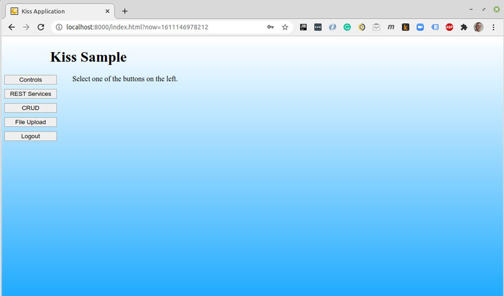

Perhaps the most popular platform for applications is the web. There are many reasons for this including portability across platforms, no need to update the program, data backup, sharing data with others, and many more. This popularity has driven many of us to the platform.
Unfortunately, the platform is a bit complex. Rather than developing in a particular environment, with web applications it is necessary to create two halves of a program utilizing vastly different technologies. On top of that, there are many additional challenges such as the communications and security between the two halves.
A typical web application would include all of the following building blocks:
All these don't even touch on all the other pieces that are not part of your application proper, such as the server (Apache, tomcat, etc), the database server (PostgreSQL, MySQL, MongoDB, etc), the OS (Linux, etc.), domain name, DNS, yadda, yadda, yadda.
The tremendous complexity notwithstanding, most application developers mainly have to concern themselves with the six items listed above. These are their main concerns.
Although there are many fine solutions available for these main concerns, in general, these solutions are siloed, complex, and incongruent. Let me explain.
Many solutions are siloed because they are single-solution packages that are complete within themselves and disconnected from other pieces of the system.
Some solutions are so complex that they can take years to learn well. Developers can struggle more with the framework they are using than the language or application they are trying to write. This is a major problem.
Lastly, by incongruent I mean that the siloed tools do not naturally fit well together. A bunch of glue code has to be written, learned, and supported to fit the various pieces together. Each tool has a different feel, a different approach, a different way of thinking.
Being frustrated with all of these problems, I wrote the KISS Web Development Framework. At first it was just various solutions I had developed. But later it evolved into a single, comprehensive web development framework. KISS, an open-source project, was specifically designed to solve these exact challenges.
KISS is a single, comprehensive, fully integrated web development framework that includes integrated solutions for:
Front-end
Back-end
The focus of KISS (its namesake) is to Keep It Simple.
KISS is simple to learn, simple to use, and simple to support. I should add that there are a few commercial applications written with KISS so KISS is battle tested and ready for real applications.
The KISS back-end is primarily built in Java. The front-end is straight HTML, CSS, and JavaScript. Keep it simple!
KISS comes as a complete, running application with ample documentation. After downloading the source code onto your Linux, Mac, or Windows machine, KISS can be up and running in no more than four command lines. Those four lines will install all third-party libraries, and a web server will be installed and configured. Since KISS is built with microservices along with other techniques, both the back-end and the front-end of your application can be modified while the system is running. There is no need to bring the server down, build, deploy, and reboot the server.
KISS has the following prerequisites:
Here are all the commands needed to download, configure, build, and run the initial KISS application on a Linux or Mac (it is assumed that you already have the JDK installed):
$ git clone https://github.com/blakemcbride/Kiss.git $ cd Kiss $ ./bld develop
On Windows, it would be:
> git clone https://github.com/blakemcbride/Kiss.git > cd Kiss > build-builder > bld develop
This process looks as follows:
At this point the initial KISS application will be built and running. You can go to http://localhost:8000 with your browser to see the application. It looks as follows:
The initial User Name is "kiss", and the initial password is "password". Out-of-the-box KISS supports PostgreSQL, MySQL, Microsoft SQL Server, SQLite, and Oracle. As shipped, KISS is configured for and includes an SQLite database. It uses this to authenticate the default user.
Once you login, the system looks as follows:
The buttons on the left exemplify various capabilities of the system.
Controls - demonstrates various HTML custom tags
REST Services - demonstrates REST calls
CRUD - demonstrates a sample create, read, update, and delete screen along with reporting and exporting
File Upload - demonstrates file upload capabilities
Logout - log out of the system
Once KISS is running, you can debug the application with your favorite IDE by connecting to debug port 9000.
One thing to be noted, KISS is not inextricably bound to the KISS front-end. KISS can and has been used with other front-end frameworks such as React, Angular, etc. It's easy.
Again, because of the KISS design, you can add and change front-end or back-end code while it is running and the changes will take effect as soon as executed. Note that all code is completely compiled. There is no interpreted code. Everything runs at full speed.
In addition to the documentation that comes with KISS, there is also a video training series on YouTube. Future articles will go into greater depth regarding the design decisions and use of the system.
Connect
Main website - https://kissweb.org
KISS Source code - https://github.com/blakemcbride/Kiss
Discussion - https://github.com/blakemcbride/Kiss/discussions
Issue tracking - https://github.com/blakemcbride/Kiss/issues
Blake McBride is an enthusiastic software developer and philosopher. He has created development frameworks for DOS, Windows, and now the Web.